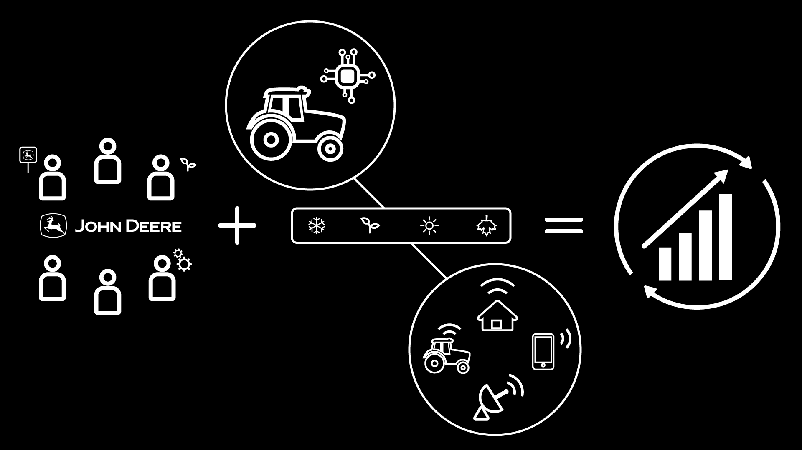

During my internship at Racepoint Global, I created this graphic for John Deere.
This project was given to me as a sketch, and taught me how to join the design process at any stage. After receiving the sketch, I proceeded to digitize it by creating some of the iconography in Adobe Illustrator. I also rearranged the middle portion of the sketch to create the final graphic.
The overall aesthetic of this project was determined by existing graphics that John Deere already had. This graphic needed to match some others that were created in a minimalist, black and white style. I was given a handful of icons (tractor, house, phone, and logo), and created the rest of the imagery to match.